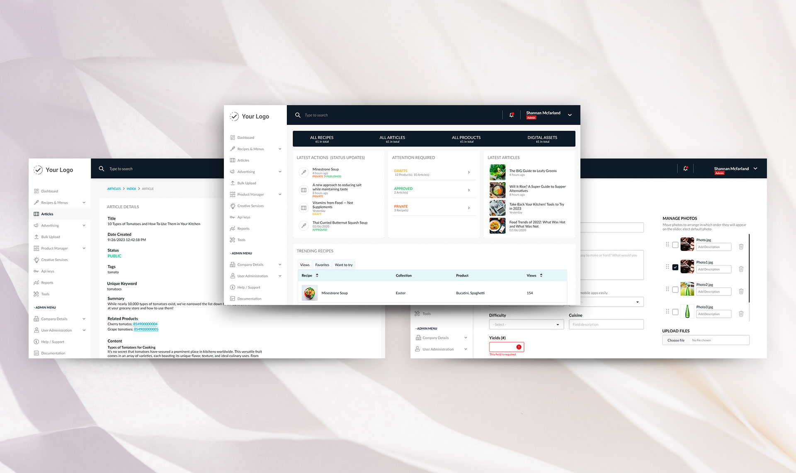
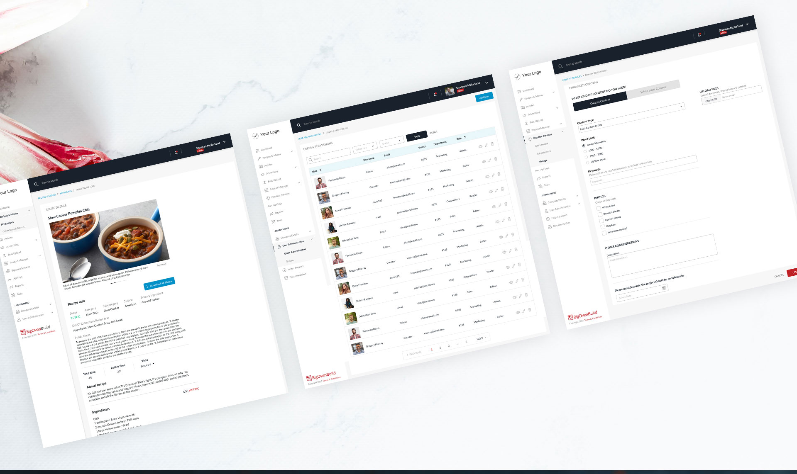

BigOven Build
01 - My Role
I led the product design from the ground up, covering information architecture, workflows, interface design, reusable components and developer-ready delivery. I worked closely with product and development throughout implementation, reviewed the product as it was built and continued improving it after launch.
02 - Approach
I approached the platform as one connected system rather than a collection of separate content areas. This helped establish consistent navigation, page structures and interaction patterns across the product. Complex workflows were broken into clearer steps, while repeated actions such as creating, editing, selecting, linking and managing content followed shared patterns.


03 - Key decisions
Designing around relationships
Recipes, products and supporting content needed to work together rather than exist as isolated records. I designed patterns that made these relationships easy to understand and manage, allowing users to move between related content without losing context.
Creating consistency
Reusable components and shared interaction patterns reduced unnecessary variation across workflows and made the platform easier to extend as new functionality was added.
Balancing information with usability
Some screens needed to present a large amount of information. Stronger hierarchy, grouping and progressive disclosure helped keep important actions clear while making advanced functionality accessible without overwhelming users.
04 - Outcome
The final platform brought recipe, product and content management together in one system, supporting the preparation and distribution of food-related content across multiple channels. A shared design language and reusable component system created consistency across the product and provided a foundation for future development.
The work continued after launch as new requirements emerged. Existing areas were refined, new functionality was introduced and the design system evolved alongside the product through ongoing collaboration with the wider team.